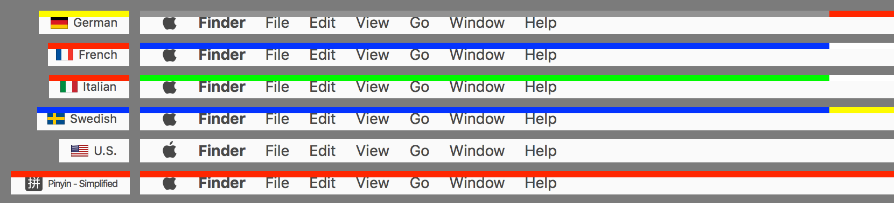

ShowyEdge
ShowyEdge
A visible indicator of the current input source for macOS.


ShowyEdge works on macOS 11 Big Sur or later.
ShowyEdge displays a color bar at the top edge of the screen depending on
the current input source.
You can recognize the current input source very easily even if you are using
fullscreen apps.
